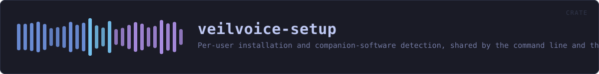

veilvoice-setup
Per-user installation and companion-software detection, shared by the command line and the desktop app.
reference · the same page on GitHub
Everything that puts VeilVoice on a machine, and everything that reports what is already on it. Two modules: install does the per-user install and its exact reversal, companions finds the optional third-party software that live mode is easier with and says who makes each piece.
Why this is a library and not part of the command line
It was part of the command line. install.rs lived inside the veilvoice-cli binary crate, which meant the desktop application could not call a single line of it — a binary crate has no consumers. The choice was to reimplement the installer behind the graphical front end, or to move the logic somewhere both front ends can reach. Reimplementing it would have produced two programs that edit PATH, drifting apart at whatever rate nobody noticed, and the PATH edit is the one operation here that can damage a machine.
So this crate is the installer, and both front ends are front ends. The command line calls install::install; so does the desktop app's setup tab. There is one implementation of the careful part, and one set of tests covering it.
What it will not do
It never runs somebody else's installer. companions reports what is present and prepares an exact command for what is not, and where that command is "open the vendor's download page" it says so rather than fetching and executing an unverified binary. A project whose entire subject is verifying what you run has no business being casual about that.
It never asks for administrator rights. Everything install does is inside the user's own account. Where a companion genuinely needs privilege — a system package manager, an audio driver — that fact is reported and the command is handed over rather than run, because a graphical program cannot honestly collect a sudo password and this one does not try.
Nothing is ticked by default. There are no checkboxes at all: each companion is a separate, deliberate action. The rule that predates this crate — detect, say what it is and who makes it, act only on an explicit yes — is unchanged by the interface getting prettier.
No unsafe, and therefore some subprocesses
#![forbid(unsafe_code)] holds here as everywhere else in the workspace, so the Windows registry is reached through reg.exe rather than the Win32 API. command wraps every spawn so that none of them flashes a console window when the desktop application is the caller — the defect that shipped in v0.1.10 — and a test reads this crate's own source to catch a spawn that forgets.
In plain words
This installs the program, if you want it installed.
You do not have to. Unzipping it and running it is a perfectly normal way to use it, and this says so rather than treating it as a mistake. Installing does three small things -- copies the program into your own folder, adds it to your PATH so typing its name works, and adds an entry so Windows can remove it -- and nothing else. No administrator rights, no service.
It also looks for the few other programs VeilVoice can work alongside, tells you who makes each one, and installs none of them unless you say so.
HOW THE CRATE FITS TOGETHER
Every arrow is a crate:: or super:: path one module actually uses, read out of the source rather than drawn by hand.
The same graph as Mermaid source
%%{init: {"theme":"base","themeVariables":{"background":"#1a1b26","primaryColor":"#1f2335","primaryTextColor":"#c0caf5","primaryBorderColor":"#7aa2f7","secondaryColor":"#16161e","tertiaryColor":"#16161e","lineColor":"#737aa2","textColor":"#c0caf5","mainBkg":"#1f2335","nodeBorder":"#7aa2f7","clusterBkg":"#16161e","clusterBorder":"#2f3549","fontFamily":"ui-monospace, SFMono-Regular, Consolas, monospace","fontSize":"14px"}}}%%
flowchart TD
n_lib(["lib.rs<br/>166 lines"])
n_companions["companions.rs<br/>761 lines"]
n_install["install.rs<br/>555 lines"]
click n_lib href "https://github.com/tilas01/veilvoice/blob/main/crates/veilvoice-setup/src/lib.rs" "open the source"
click n_companions href "https://github.com/tilas01/veilvoice/blob/main/crates/veilvoice-setup/src/companions.rs" "open the source"
click n_install href "https://github.com/tilas01/veilvoice/blob/main/crates/veilvoice-setup/src/install.rs" "open the source"This site loads no third-party script, so it cannot run Mermaid; the diagram above is the same nodes and edges drawn by the generator instead. GitHub renders the source below directly.
THE FILES
| File | Lines | What it is |
|---|---|---|
companions.rs | 761 | Optional third-party software, detected rather than assumed. |
install.rs | 555 | Put this program somewhere the system can find it. |
lib.rs | 166 | Everything that puts VeilVoice on a machine, and everything that reports what is already on it. |